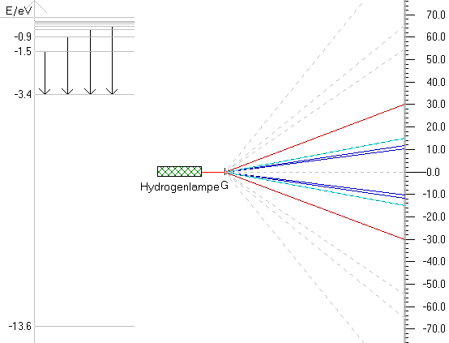

I denne simulation vises Energidiagrammet for hydrogen og afbøjning i et gitter fra en hydrogenlampe. I simulationen kan man skifte mellem de forskellige spektralserier og se de tilhørende overgange markeret i energidiagrammet. Når man peger med musen på en overgang, vises bølgelængden af det udsendte lys i statuslinien.
Ved hvilke overgange udsender hydrogen ultraviolet lys?
Ved hvilke overgange udsender hydrogen synligt lys?
Ved hvilke overgange udsender hydrogen infrarødt lys?
Vi ser nu nærmere på de synlige linier i hydrogenspektret.
Hvilken farve afbøjes mest, rød eller violet?
Bliver afbøjningsvinklen altid større for en større orden uafhængigt af farven?
Du kan eventuelt selv lave et regneeksempel, hvor du aflæser afstande på skærmen og udregner de tilhørende bølgelængder og dernæst udregner rydbergkonstanten, men det bedste er naturligvis at lave et rigtigt eksperiment. Nu ved du, hvor du skal kikke efter de forskellige farver.
Udskriv et skærmbillede visende hydrogenspektret.